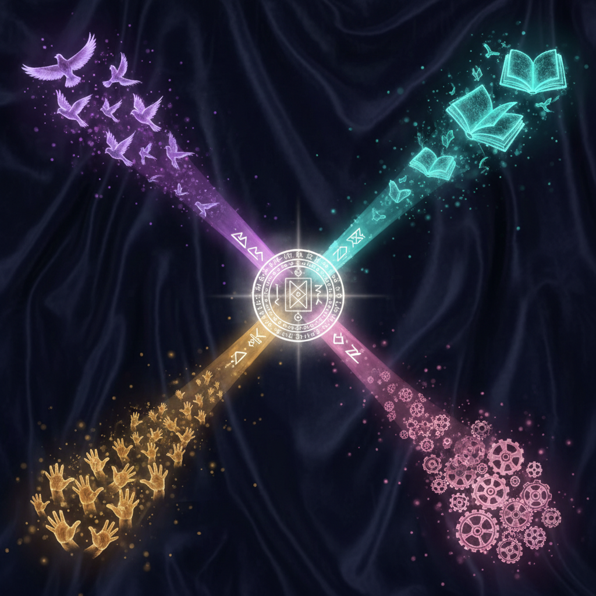
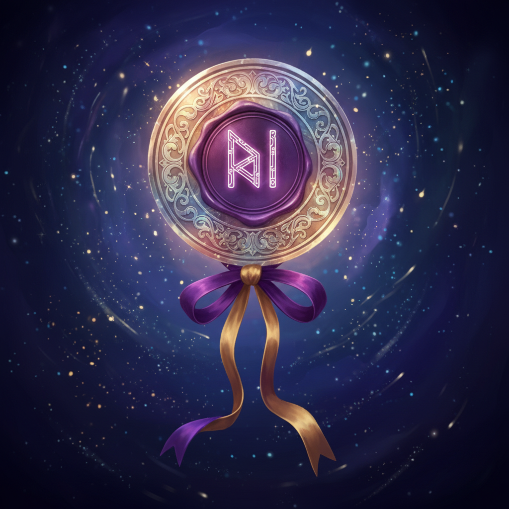

선도학교 사업 안내와
업무 자동화 도구
2026 AI·디지털 활용 선도학교
오늘 다룰 두 갈래
선도학교 사업 안내
- 사업 정의와 4가지 전환
- 필수과제 세 가지와 선택과제
- 필수 참여 사항과 외부 일정
- 예산 편성과 집행 유의사항
- 신명중 적용과 교학공의 역할
AI 행정 업무 자동화 도구
- 지난 4월 모임 복기
- 데스크톱 앱의 강점 세 가지
- Claude 데스크톱과 Cowork
- Codex 데스크톱
선도학교란 무엇인가
사업이 요구하는 4가지 전환

| 전환 | 정책 언어 | 학교 운영의 실제 의미 |
|---|---|---|
| 배움전환 | AI·디지털 기반 맞춤 교수·학습·평가 | 수업·평가에서 학생별 차이를 도구로 다룸 |
| 관계전환 | 교사-학생, 학생-학생, 학생-도구 상호작용 | 학생 반응·산출물을 더 자주 살핌 |
| 도구전환 | AI·디지털 도구의 창의적 결합 | 단일 도구가 아닌 흐름에 맞는 도구 조합 |
| 인식전환 | 실천 연구와 학교 안팎의 공유 | 사례를 남기고 동료·외부와 나눔 |
네 전환은 한 사례 안에 함께 담깁니다.
운영 과제 — 필수 셋과 선택 하나
배움전환
교수·학습·평가 혁신 사례 개발
관계전환
깊이 있는 상호작용 사례 개발
인식전환
공동연구·실행·확산
선택과제
도구전환 또는 학교 자율 과제
배움전환 — 교수·학습·평가 혁신
AI·디지털 기반 교육자료를 활용해 학생 맞춤형 수업·평가 모델을 개발하고, 깊이 있는 수업을 실천하는 일입니다.
학생 맞춤 혁신
데이터 분석을 토대로 수준별·흥미별 수업 모델을 개발함
역량 중심 설계
AI·디지털 리터러시 등 미래 역량을 함양하는 수업 설계
가이드북 활용
「AI·디지털 기반 수업 실천 가이드북」을 단계별로 연계함
사례 산출물
수업지도안·워크시트·학생 활동 결과·효과성 증빙
관계전환 — 깊이 있는 상호작용
AI·디지털을 매개로 교사·학생·도구 사이의 질 높은 상호작용을 설계하고, 그 효과를 검증하는 사례를 발굴합니다.
교사 ↔ 학생
데이터 기반 맞춤 피드백과 정서적 지원·상담을 강화함
학생 ↔ 학생
디지털 도구로 실시간 협력 학습과 동료 피드백을 활성화함
학생 ↔ 도구
AI 튜터와 코스웨어로 개별화된 자기주도 학습을 지원함
인식전환 — 공동연구·실행·확산
교원학습공동체의 일
- 학교별 6~10명 내외 자발적 연구·실천 단위
- 동료 교사 간 수업 공개와 성찰 피드백을 진행함
- 학부모 공개수업과 공유회로 우수 사례를 확산함
- 도전과 협력의 학습하는 학교 문화를 만듦
수업 실천 가이드북 5단계
| 1단계 수업 고민 | 무엇이 중요한가요? |
| 2단계 수업 설계 | 어떻게 설계하고 개발할까요? |
| 3단계 수업 실행 | 실제로 실행 가능한가요? |
| 4단계 수업 분석·개선 | 실제로 효과가 있나요? |
| 5단계 수업 공유·확산 | 다른 맥락에서도 가능한가요? |
가이드북 단계별 워크시트는 교학공 협의와 수업 연구에 활용됩니다.
필수 참여 사항과 외부 일정
필수·권장·제한
- 필수 — AI·디지털 리터러시 진단검사(중2, 7월 중, SEN스쿨)
- 필수 — 선도학교 공유회 2회 참여
- 필수 — 교육지원청 수업나눔 1회
- 필수 — 12월 결과보고서 제출
- 권장 — 맞춤형 학업성취도 자율평가(중1 영어·수학)
- 제한 — AI 중점학교와 중복 지정 불가
2026년 외부 일정
예산 편성 가이드라인 — 총 3,500만 원
| 항목 | 금액 | 주요 용도 |
|---|---|---|
| 교원역량강화비 | 400만 원 | 교원 연수, 교학공 운영, 컨설팅 |
| 교육활동운영비 | 2,520만 원 | AI 코스웨어 구독료, 에듀테크 구입, 학생 활동 재료비 |
| 환경지원비 | 290만 원 | 기기 부속품·소모품 구입 |
| 사업추진경비 | 290만 원 | 운영팀 협의회비, 사업 운영 업무추진비 |
예산 집행 유의사항
법령·심의
- 50만 원 이상 자산성 물품(노트북·태블릿 등) 구입 불가
- AI 코스웨어·유료 에듀테크는 학운위 심의 후 도입함(초·중등교육법 제29조의2)
- 에듀파인으로 투명 회계, 정기 자체 점검을 진행함
집행 제한 항목
- 외부 위탁 강사가 수업을 대신하는 체험 프로그램은 사업 취지에 부합하지 않음
- 정보 교과 전용 교구(피지컬 컴퓨팅 등)는 AI 중심학교 사업 대상
- 여비·출장비·숙박비·유류비 지원 불가
- 개인 자산 취득 물품(개인용 마이크·스피커 세트 등) 구입 불가
- 네트워크 공사·방송 장비 등 시설성 항목은 학교 운영비로 처리함
신명중 적용과 교학공의 역할
(전 학년 + 특수)
국어·수학·영어·사회·도덕·기술·진로·특수
AI 행정 업무 자동화 도구
지난 모임에서 만든 토대 위에서, 데스크톱 앱만의 영역으로 한 걸음 더 들어갑니다.
지난 4월 모임
- Claude 데스크톱 앱을 설치함
- GitHub 계정을 만듦
- 프로젝트 설정과 학습지 업로드를 진행함
- 학습지를 미니 게임 앱으로 변환함
모두 웹 화면에서도 가능한 흐름이었습니다.
오늘 5월 모임
- 로컬 폴더를 작업공간으로 지정함
- 파일을 직접 읽고 수정·변환함
- 운영체제와 외부 도구를 제어함
- 대표 데스크톱 앱 두 가지를 실연함
데스크톱 앱만이 할 수 있는 일에 집중합니다.
데스크톱 앱의 강점
웹 UI가 닿지 않는 세 가지 영역을 데스크톱 앱이 채웁니다.
① 로컬 파일 접근
업로드 없이 허용한 폴더의 원본 파일을 직접 읽고 씀
② 다단계 작업 연결
읽기 → 변환 → 저장 → 검증을 한 흐름으로 이어 감
③ 운영체제 제어
파일 정리, 이름 변경, 압축, 외부 도구 호출까지 처리함
이 영역을 다룰 수 있는 대표 도구는 Claude 데스크톱과 Codex 두 가지입니다.
Claude 데스크톱 · Cowork

- 유료 플랜에서 열리는 Cowork 기능을 사용함
- 로컬의 특정 폴더를 작업공간으로 지정함
- 그 폴더 안의 파일을 함께 보며 작업을 진행함
- 파일 작성·수정·정리까지 한 흐름으로 처리함
실제 Cowork 창을 띄워, 폴더 지정부터 파일 작업까지 직접 보여드립니다.
Codex 데스크톱

- OpenAI 계열의 데스크톱 작업 도구
- 같은 방식으로 폴더를 작업공간으로 지정함
- 파일 읽기·수정·명령 실행까지 가능
- Claude와 함께 대표적인 두 도구
취향·업무 성격에 따라 골라 쓰면 되고, 한 도구만 익숙해도 충분합니다.
오늘의 정리
사업의 4가지 전환
배움·관계·도구·인식 전환
필수과제 세 가지
교수·학습·평가 혁신, 깊이 있는 상호작용, 공동연구·실행·확산
교학공의 역할
필수과제 3의 직접 단위, 12월 결과보고서의 자료 원천

함께 보는 자료
- 사업 안내 유인물 1부
- Gemini Canvas 학습앱 만들기 가이드 PDF
- GitHub Pages 배포 가이드 PDF
다음 모임: 6월 22일(월) 에이전트 엔지니어링 심화
신명중학교 AI·디지털 선도학교 운영팀 · 왕선희 · 김헌용